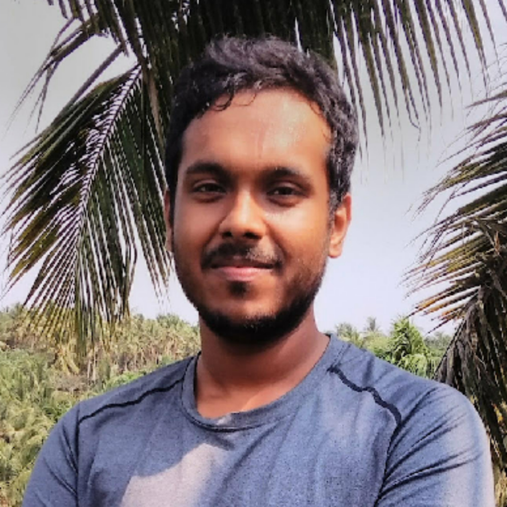

Doctoral Student, Department of Aerospace Engineering
Indian Institute of Science, Bangalore
Hi! I'm Vivek — a 28-year-old born and brought up in Calicut, a laid-back coastal city in Kerala, India. Malayalam (മലയാളം) is my mother tongue. I grew up curious about how things work, which somehow led me all the way to fluid dynamics and supercomputers 😊.
I'm currently a doctoral student at the Indian Institute of Science (IISc), Bangalore, working under Prof. Santosh Hemchandra in the Combustion Physics Lab. I spend my time trying to understand complex fluid flows using data-driven modelling and complex systems theory. I contribute to in-house CFD (LES/DNS) solvers in C, with work spanning rotating overlapping mesh frameworks, periodic boundary conditions, and coupling solvers with chemical kinetics libraries like Cantera.
Before IISc, I did my B.Tech in Aerospace Engineering at the Indian Institute of Technology Kanpur, where I worked on the Design of a Twin-Boom Fixed-Wing VTOL UAV for my thesis, guided by Prof. Ajoy Kanti Ghosh. I then moved to IISc for my M.Tech, spent a year as a Project Associate, and have since continued as a doctoral student.
Outside of work, I'm a hobbyist software developer, a lover of music, and an enthusiastic (if average) chess player.
Using Large-Eddy Simulation (LES) at Re = 10,000 to determine flow evolution past side-by-side cylinders. Complex network analysis identifies the location and spatial extent of flow regions governing unsteady wake dynamics.
Read Publication →We propose a data-driven approach for noise source localization using Transfer Entropy (TE). Applied to a Mach 3.0 turbulent jet at Re = 7.5M.
Read Publication →Assessment of a data-driven approach using Complex Network Analysis (CNA) to identify critical regions driving unsteady dynamics.
Read Publication →